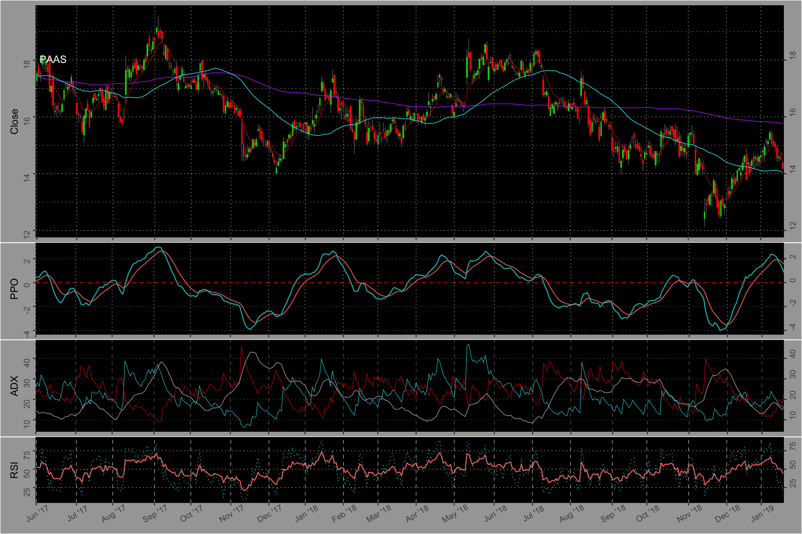
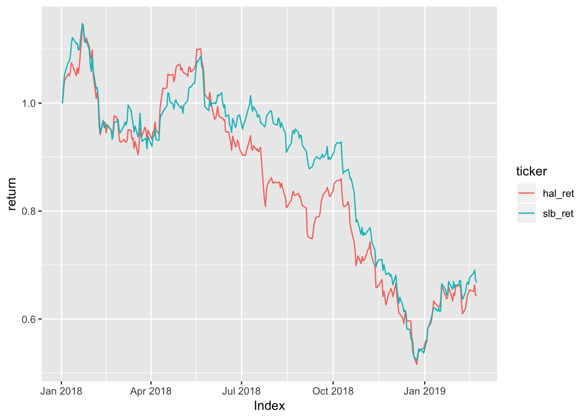

Chapter 3 Visualizing data
3.0.1 Plotting candlestick chart with technicals
The function create_candlestick() takes 3 arguments: a ticker, a start date (by default, it is a year ago), an end date (by default, it is today). We got the main part of the function from the tidyquant package.
geom_candlestick <- function(mapping = NULL, data = NULL, stat = "identity",
position = "identity", na.rm = TRUE, show.legend = NA,
inherit.aes = TRUE,
colour_up = "gray30", colour_down = "gray30",
fill_up = "green3", fill_down = "red",
...) {
linerange <- ggplot2::layer(
stat = StatLinerangeBC, geom = GeomLinerangeBC, data = data, mapping = mapping,
position = position, show.legend = show.legend, inherit.aes = inherit.aes,
params = list(na.rm = na.rm, fill_up = fill_up, fill_down = fill_down,
colour_up = colour_up, colour_down = colour_down, ...)
)
rect <- ggplot2::layer(
stat = StatRectCS, geom = GeomRectCS, data = data, mapping = mapping,
position = position, show.legend = show.legend, inherit.aes = inherit.aes,
params = list(na.rm = na.rm, fill_up = fill_up, fill_down = fill_down,
colour_up = colour_up, colour_down = colour_down, ...)
)
list(linerange, rect)
}
StatLinerangeBC <- ggplot2::ggproto("StatLinerangeBC", Stat,
required_aes = c("x", "open", "high", "low", "close"),
compute_group = function(data, scales, params,
fill_up, fill_down,
colour_up, colour_down) {
data <- data %>%
dplyr::mutate(colour = ifelse(open < close, colour_up, colour_down))
tibble::tibble(x = data$x,
ymin = data$low,
ymax = data$high,
colour = data$colour)
})
StatRectCS <- ggplot2::ggproto("StatRectCS", Stat,
required_aes = c("x", "open", "high", "low", "close"),
compute_group = function(data, scales, params,
fill_up, fill_down,
colour_up, colour_down) {
data <- data %>%
dplyr::mutate(fill = ifelse(open < close, fill_up, fill_down),
ymin = ifelse(open < close, open, close),
ymax = ifelse(open < close, close, open))
tibble::tibble(xmin = data$x - 0.45,
xmax = data$x + 0.45,
ymin = data$ymin,
ymax = data$ymax,
fill = data$fill)
})
GeomRectCS <- ggproto("GeomRectCS", GeomRect,
default_aes = aes(colour = NA,
size = 0.5,
linetype = 1,
alpha = NA))
GeomLinerangeBC <- ggproto("GeomLinerangeBC", GeomLinerange,
default_aes = aes(size = 0.5,
linetype = 1,
alpha = NA))
create_candlestick <- function(tickerss, start_d = today()-360, end_d = today()) {
df <- read_csv(paste0(thePath, "/stockdata_av/", tickerss, ".csv")) %>%
select(Index, Open, High, Low, Close, Volume)
df$Index <- ymd(df$Index)
#for the ADX
yo <- TTR::ADX(df[,3:5], n = 13) %>% as_tibble() %>% select(-DX)
# Adding the other variables such a moving averages and relative strength index
df3 <- df %>%
mutate(sma200 = TTR:: SMA(Close, 200),
sma50 = TTR::SMA(Close, 50),
ema9 = TTR::EMA(Close, 9),
rsi14 = TTR::RSI(Close, 14),
rsi5 = TTR::RSI(Close, 5),
ppo_line = (TTR::EMA(Close, n = 12) - TTR::EMA(Close, n = 26)) / TTR::EMA(Close, n = 26) * 100,
ppo_signal = TTR::EMA(ppo_line, n = 9))
df2 <- bind_cols(df3, yo) %>%
filter(Index >= start_d & Index <= end_d)
# The main chart with the moving averages
p1 <- ggplot(df2, aes(x=Index, y = Close)) +
geom_candlestick(aes(open = Open, high = High, low = Low, close = Close)) +
geom_line(aes(y = ema9), color = "red", size = 0.2) +
geom_line(aes(y = sma200), color = "darkorchid1", size = 0.3) +
# because I need to remember which chart is it (to which stock it belongs)
annotate("text", x = df2$Index[10], y = 1.1 * df2$Close[10], label = tickerss, color = "white") +
geom_line(aes(y = sma50), color = "Turquoise 1", size = 0.3) +
scale_x_bd(business.dates=df2$Index, max.major.breaks = 20, labels=date_format("%b '%y"),
expand = c(0,0.3)) +
scale_y_continuous(sec.axis = sec_axis(~.*1)) +
theme(axis.title.x = element_blank(),
axis.text.x = element_blank(),
axis.text.y = element_text(angle = 90),
# This is to shrink the padding at the 4 side of the graph
plot.margin = margin(0.2, 0.2, 0.1, 0.4, "cm"),
panel.background = element_rect(fill = "black"),
plot.background = element_rect(fill = "Gray 65"),
panel.grid.major.x = element_line(color = "white", linetype = "dotted", size = 0.2),
panel.grid.major.y = element_line(color = "white", linetype = "dotted", size = 0.2),
panel.grid.minor.y = element_line(color = "white", linetype = "dotted", size = 0.15),
panel.grid.minor.x = element_blank())
# graphing of the ppo part.
p2 <- ggplot(df2, aes(x = Index)) +
geom_line(aes(y = ppo_signal, color = "darkorchid1"), size = 0.4) +
geom_line(aes(y = ppo_line, color = "Royal Blue 1"), size = 0.5) +
geom_hline(yintercept = 0, color = "red", linetype = "dashed", size = 0.3) +
scale_y_continuous(sec.axis = sec_axis(~.*1)) +
scale_x_bd(business.dates=df2$Index, max.major.breaks = 20, labels=date_format("%b '%y"),
expand = c(0,0.1)) +
ylab("PPO") +
theme(legend.position = "none",
axis.title.x = element_blank(),
axis.text.x = element_blank(),
axis.text.y = element_text(angle = 90),
plot.margin = margin(0, 0.2, 0.1, 0.4, "cm"),
panel.background = element_rect(fill = "black"),
plot.background = element_rect(fill = "Gray 65"),
panel.grid.major.x = element_line(color = "white", linetype = "dotted", size = 0.2),
panel.grid.major.y = element_line(color = "white", linetype = "dotted", size = 0.1),
panel.grid.minor = element_blank())
p4 <- ggplot(df2, aes(x = Index)) +
geom_line(aes(y = DIp), color = "Turquoise 1", size = 0.2) +
geom_line(aes(y = DIn), color = "red", size = 0.2) +
geom_line(aes(y = ADX), color = "Gray 70", size = 0.3) +
scale_y_continuous(sec.axis = sec_axis(~.*1)) +
scale_x_bd(business.dates=df2$Index, max.major.breaks = 20, labels=date_format("%b '%y"),
expand = c(0,0.1)) +
ylab("ADX") +
theme(legend.position = "none",
axis.title.x = element_blank(),
axis.text.x = element_blank(),
axis.text.y = element_text(angle = 90),
plot.margin = margin(0, 0.2, 0.1, 0.4, "cm"),
panel.background = element_rect(fill = "black"),
plot.background = element_rect(fill = "Gray 65"),
panel.grid.major.x = element_line(color = "white", linetype = "dashed", size = 0.1),
panel.grid.major.y = element_line(color = "white", linetype = "dotted", size = 0.1),
panel.grid.minor = element_blank())
p3 <- ggplot(df2, aes(x = Index)) +
geom_line(aes(y = rsi14, color = "Dark Orange")) +
geom_line(aes(y = rsi5, color = "Gray 80"), linetype = "dotted", size = 0.4) +
scale_x_bd(business.dates=df2$Index, max.major.breaks = 20, labels=date_format("%b '%y"),
expand = c(0,0.5)) +
scale_y_continuous(sec.axis = sec_axis(~.)) +
ylab("RSI") +
theme(legend.position = "none",
axis.title.x = element_blank(),
axis.text.y = element_text(angle = 90),
axis.text.x = element_text(angle = 30, vjust = 0.8),
plot.margin = margin(0.0, 0.2, 0.2, 0.4, "cm"),
panel.background = element_rect(fill = "black"),
plot.background = element_rect(fill = "Gray 65"),
panel.grid.major.x = element_line(color = "white", linetype = "dashed", size = 0.2),
panel.grid.major.y = element_line(color = "white", linetype = "dotted", size = 0.2),
panel.grid.minor = element_blank())
grid.arrange(p1, p2, p4, p3, ncol = 1, heights = c(2.5, 1, 1, 1))
}Let’s try it.
ticker <- "PAAS"
#get_eod_data(ticker)
create_candlestick(ticker, "2017-06-01", "2019-01-20")
3.0.2 Plotting cumulative return
This graph is useful when comparing the returns of several assets together.
ticker1 <- "SLB"
ticker2 <- "HAL"
starting_time <- "2018-01-01"
#get_eod_data(c(ticker1, ticker2))
df1 <- read_csv(paste0(thePath, "/stockdata_av/", ticker1, ".csv")) %>%
select(Index, Adjusted) %>% rename(SLB = Adjusted)
df2 <- read_csv(paste0(thePath, "/stockdata_av/", ticker2, ".csv")) %>%
select(Index, Adjusted) %>% rename(HAL = Adjusted)
df <- left_join(df1, df2, by="Index") %>% filter(Index >= starting_time) %>%
mutate(slb_ret = SLB / first(SLB), hal_ret = HAL / first(HAL)) %>% na.omit() %>%
select(Index, slb_ret, hal_ret) %>% gather(key = "ticker", value = "return", -Index)
ggplot(df, aes(x = Index, y = return, col = ticker)) + geom_line()